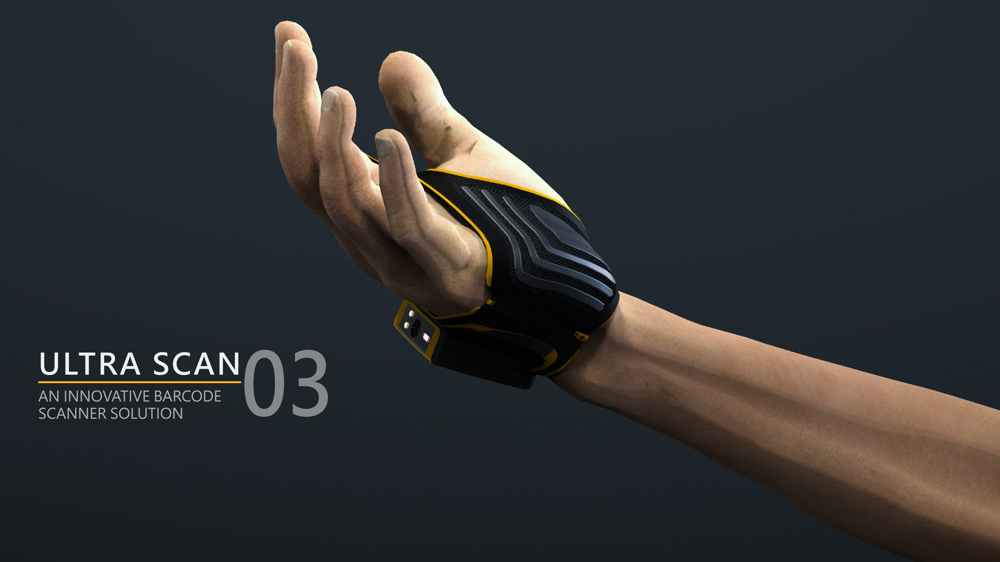
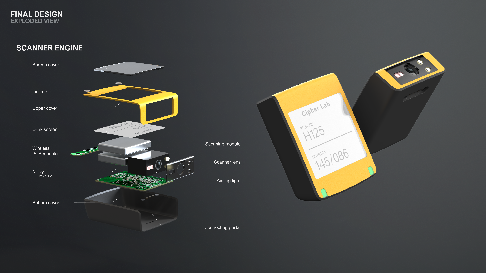

Position the read head
The read head moves closer to the action, balancing aiming accuracy with a natural working posture.
A wearable barcode-scanning concept designed for the speed, strain and shared reality of industrial work.

UltraScan began with the conditions of repeated industrial work: long wear time, changing users, hygiene concerns and the cost of breaking a task to find a handheld device. The opportunity was to make scanning more continuous while keeping the body unencumbered.
Research compared wrist, hand and finger-based positions, then considered scanner placement, aiming accuracy, battery duration and scan mode as one connected ergonomic problem.

Wearable architecture
The read head moves closer to the action, balancing aiming accuracy with a natural working posture.
Screen, indicator and aiming light are organised to make scan status legible in fast, high-noise settings.
The glove, trigger and scanner module are developed as one wearable arrangement rather than separate accessories.

Selected visual / Scanner architectureFeedback, power and scan engine.Current source preview — replace later with an exploded view, CMF samples or functional prototype imagery.The final concept brings glove ergonomics, a watch-like scanner module and a purposeful trigger into a clear wearable identity. Its value is not only faster scanning, but a more continuous relationship between the worker, task and information.